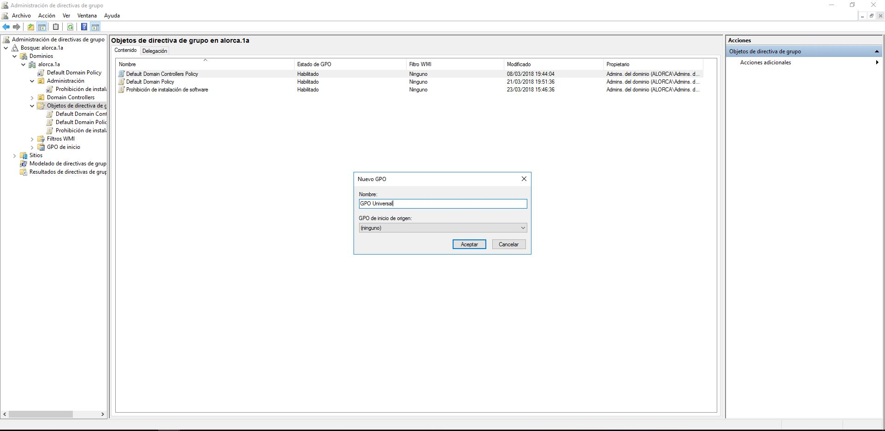
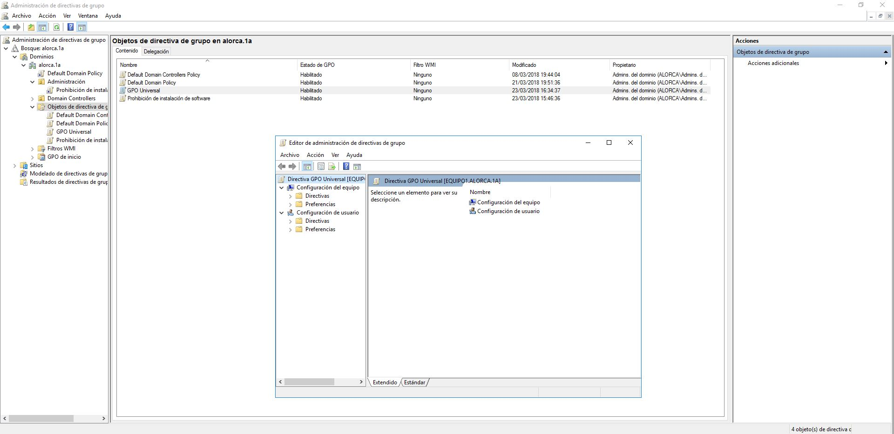
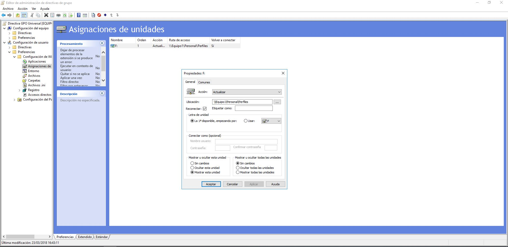
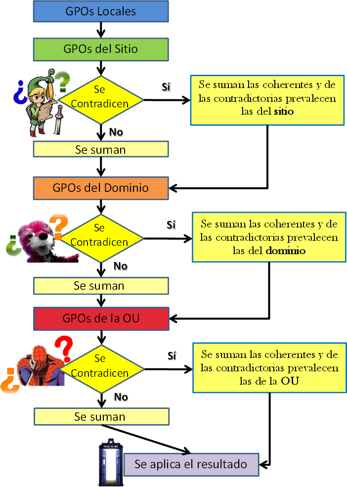
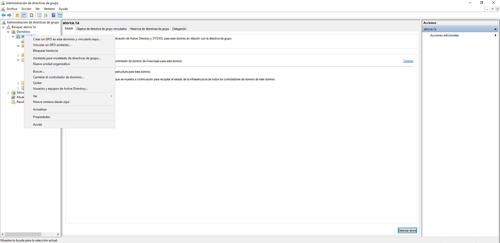
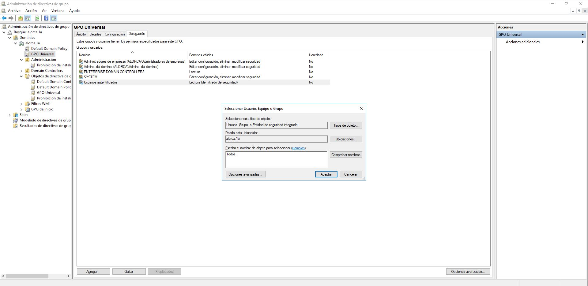
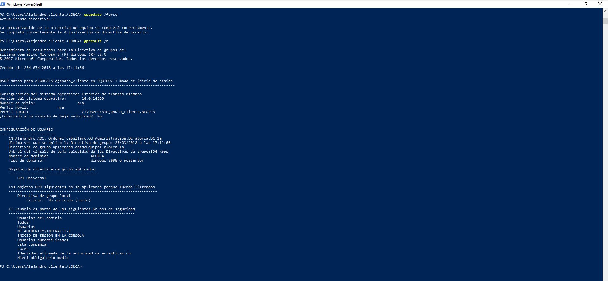

b.5) Implementación y verificación de directivas de grupos
¿Qué es una directiva de grupo?
Directiva de Grupo es una característica de Windows NT, familia de Sistemas Operativos. Directiva de grupo es un conjunto de reglas que controlan el entorno de trabajo de cuentas de usuario y cuentas de equipo. Directiva de grupo proporciona la gestión centralizada y configuración de sistemas operativos, aplicaciones y configuración de los usuarios en un entorno de Active Directory. En otras palabras, la Directiva de Grupo, en parte, controla lo que los usuarios pueden y no pueden hacer en un sistema informático. Aunque la Directiva de Grupo es más frecuente en el uso de entornos empresariales, es también común en las escuelas, las pequeñas empresas y otros tipos de organizaciones más pequeñas. Directiva de grupo a menudo se utiliza para restringir ciertas acciones que pueden presentar riesgos de seguridad potenciales, por ejemplo: Bloquear el acceso al Administrador de tareas, restringir el acceso a determinadas carpetas, deshabilitar la descarga de archivos ejecutables, etc.
Creación de una GPO
Dentro de Administrador del servidor seleccionar Herramientas y Administración de directivas de grupo, aparecen las GPO del dominio, para crear una nueva GPO desde cero, pulsar en Objetos de directiva de grupo con el botón derecho y seleccionar Nuevo.
No seleccionar ninguna GPO de origen y pulsamos Aceptar, pulsamos sobre la nueva GPO con el botón derecho y seleccionar Editar.
Una vez dentro de la edición de la GPO hay que asignar la unidad de red que los usuarios deben montar, siguiendo las políticas adecuadas. Navegar a Configuración del usuario > Preferencias > Configuración de Windows > Asignaciones de Unidades y editar la unidad que viene asignada en la GPO pulsando sobre ella con el botón derecho y seleccionar Propiedades
Seleccionar la ubicación, el nombre con el que se quiere mostrar la unidad, la letra que se le asignará y el usuario que se conectará.
Activar una GPO
Para activar una GPO se debe seleccionar la OU, dominio, sitio o equipo local donde se quiere activar la GPO.
Un usuario, estará en un equipo local que a su vez se ubica en un sitio, y este sitio pertenecerá a un dominio que será miembro de una OU. Se puede dar la situación en la que en un equipo local se aplique una GPO, en el sitio otra, y en el dominio y la OU otras, respectivamente. Cuando se den casos así, las políticas se aplicarán según unas prioridades que atienden a una serie de reglas que se describen a continuación.
En las GPO, las políticas asignadas a una OU prevalecen sobre las del dominio, que a su vez prevalecen sobre las del sitio y estas, sobre las del equipo local. Esto no quiere decir que las políticas se anulen unas a otras, sino que siempre se suman y tan solo se anulan en caso de contradecirse entre ellas.
Se aplica el siguiente diagrama de flujo para leer las GPO y se comprueba si se contradicen o no, sumando las coherencias y prevaleciendo las más restrictivas.
Cada organización debe crear las GPO que más se acerquen a sus necesidades. Para añadir la GPO, por ejemplo al dominio, hacer click con el botón derecho y seleccionar Vincular GPO existente…
Y por ultimo personalizar a que usuarios o grupos se aplicará la política, con esto quedaría dada de alta la GPO y creada a nuestro antojo.
Nos dirigimos al equipo del cliente y actualizamos con el comando gpupdate /force, una vez ya actualizado para ver las GPO ponemos el sigueinte comando gpresult /r.
